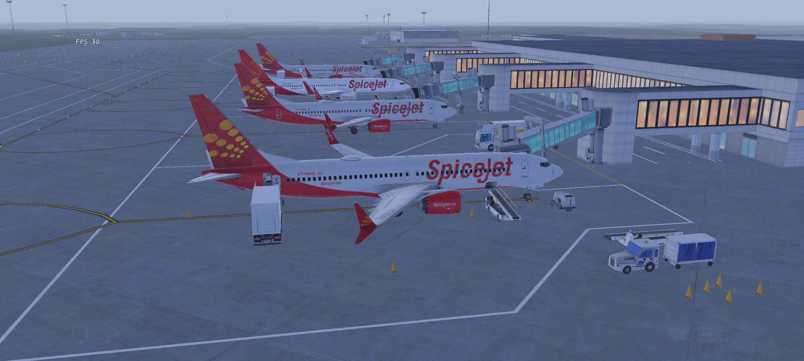
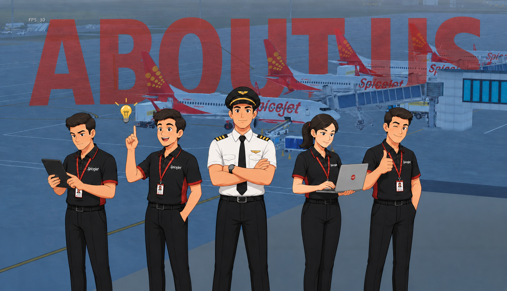
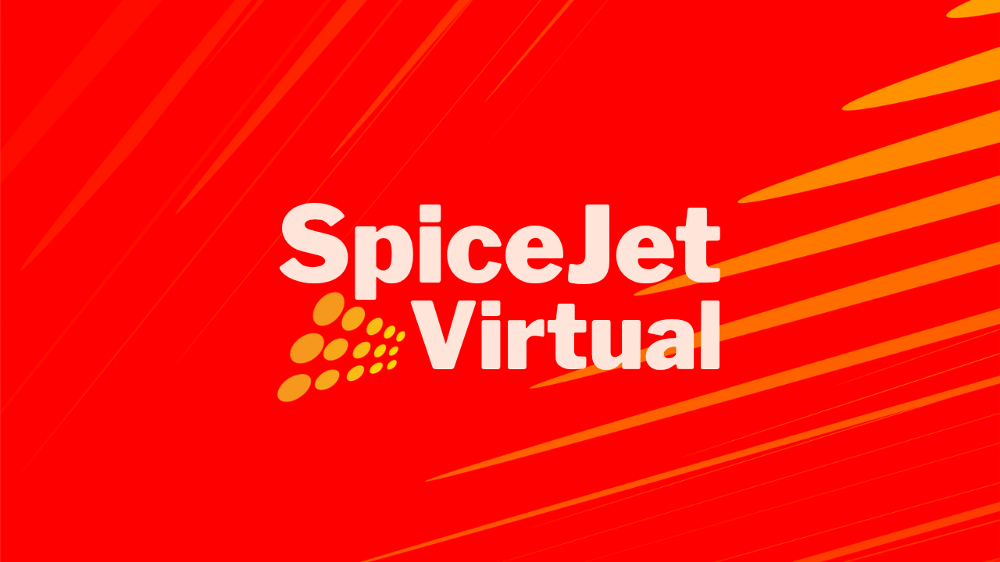

Welcome to SpiceJet Virtual
India's virtual airline in Infinite Flight

SpiceJet Virtual is a dynamic and community-driven virtual airline built for passionate pilots on Infinite Flight who seek realism, professionalism, and an engaging flying experience. Inspired by real-world airline operations, we aim to replicate the structure, discipline, and excitement of commercial aviation while maintaining a friendly and supportive environment. Our pilots operate a diverse fleet across an expanding network of domestic and international routes, connecting major hubs and destinations with precision and teamwork. From beginners taking their first steps in aviation to experienced captains mastering complex operations, SpiceJet Virtual offers a structured rank system, realistic procedures, and continuous growth opportunities. Our dedicated staff ensures smooth operations, organizes events, and supports every pilot in their journey. At SpiceJet Virtual, we don’t just fly routes—we build a community where aviation enthusiasts come together to learn, improve, and experience the thrill of airline flying in the most immersive way possible. ✈️
Live Statistics
About Our CEO
An Indian aviation enthusiast with a deep-rooted passion for flight simulation, the journey into aviation began with Infinite Flight and quickly evolved into something much bigger. What started as a simple interest soon transformed into a clear vision — to build a professional, well-organized, and realistic virtual airline where pilots can truly experience the discipline and excitement of real-world aviation. With a strong focus on teamwork, realism, and continuous improvement, the aim is to create a community that not only replicates airline operations but also helps pilots grow their skills and confidence. Through dedication and leadership, SpiceJet Virtual is being shaped into a platform where both new and experienced pilots can come together, learn from each other, and enjoy a structured flying environment. The goal is not just to operate flights, but to build a respected and professional community of sim pilots who share the same passion for aviation. Every route flown and every milestone achieved reflects the commitment to quality, realism, and a shared love for the skies.

Explore Our Fleet
Discover the aircraft that power our virtual airline.